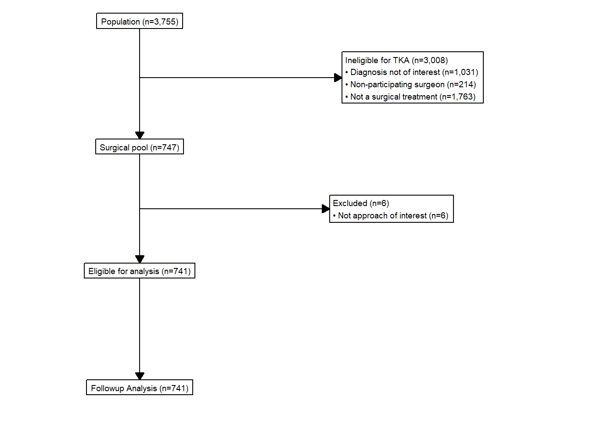
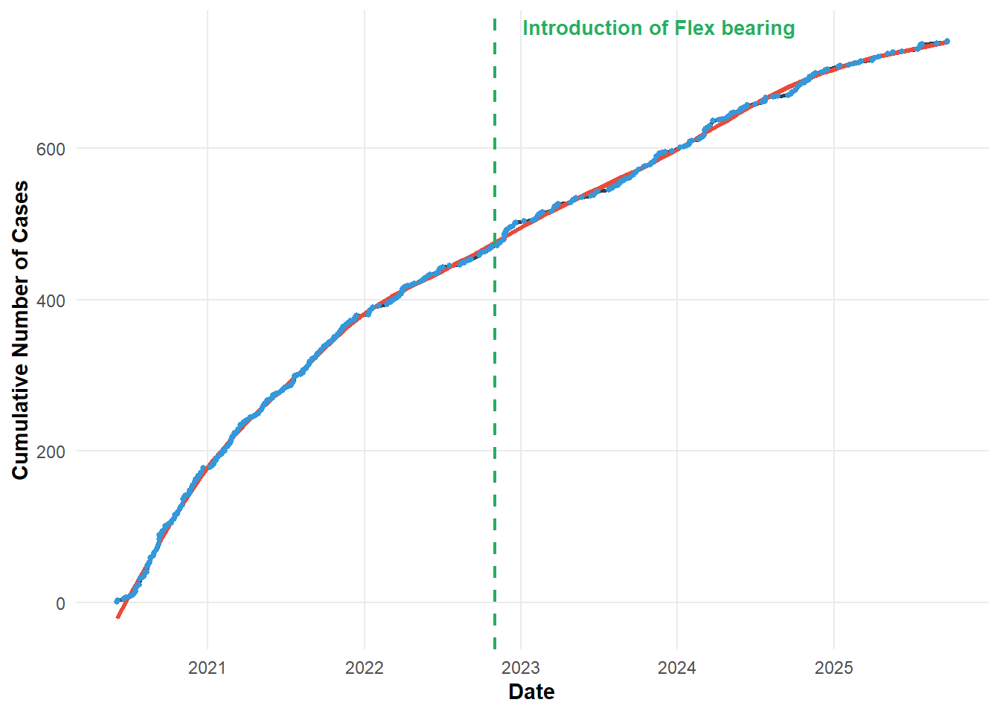
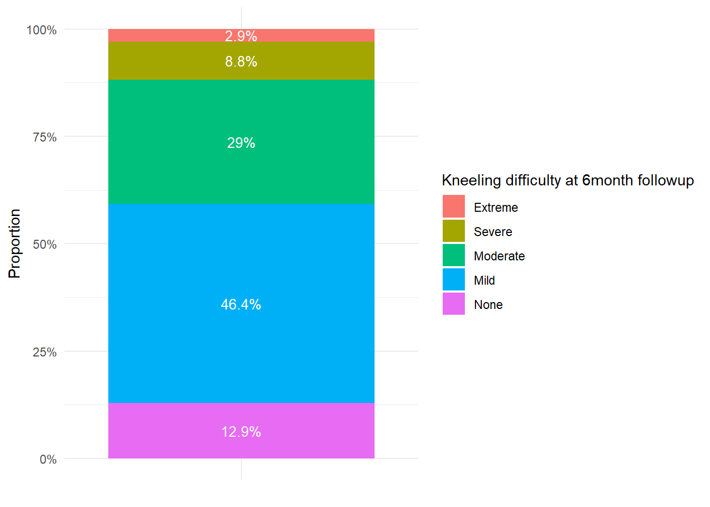

Rows: 3,420
Columns: 4
$ `POA 2021 Code` <dbl> 800, 810, 812, 820, 822, 822, 822, 8…
$ `POA 2021 Area (km2)` <dbl> 3.1731, 24.4283, 35.8899, 39.0642, 1…
$ `MMM 2023` <dbl> 2, 2, 2, 2, 2, 5, 6, 7, 2, 2, 2, 5, …
$ `MMM 2023 Area in POA 2021 (km2)` <dbl> 3.173800e+00, 2.442859e+01, 3.588975…Subvastus cohort analysis
1 Preamble
The following analysis is a report on the activity, quality and data contained in the AORA registry.
Access to the AORA datasets was pre-authorised.
A function was generated to retrieve files to call on later in the analysis for processing data imports.
Data was retrieved from live database tables. Source files were specified and stored as global variables to call on in further functions.
1.1 Retrieve MMM
A static registry snapshot was retrieved and formatted based on the fixed date of preparation of the snapshot (01-Dec-2025).
2 Context
The Arthroplasty Outcomes in Regional Australia (AORA) registry has been in operation since June 2020, collecting KneeArthritis and HipArthritis presentations to a private clinic in Grafton, NSW. The setup of the registry is detailed on the registry wiki. The registry started with two surgeons contributing with one surgeon stopping participation in December 2022.
3 Recruitment Flow
Flowcharts as per STROBE (Vandenbroucke et al. 2007) and RECORD (Benchimol et al. 2015) guidelines were generated for treatments enrolled into the Registry. Followup was set to eligibility at 6months followup.

Cumulative recruitment over time was plotted from Registry inception to the present.

4 Baseline and Demographics
| Characteristic | N = 6621 |
|---|---|
| AgeAtTreatment | 68 (63, 75) |
| Sex | |
| Female | 338 (51%) |
| Male | 324 (49%) |
| EducationLevel | |
| Post-secondary trade certificate or diploma | 125 (29%) |
| Postgraduate degree | 47 (11%) |
| Secondary - Year 12 | 44 (10%) |
| Undergraduate degree | 48 (11%) |
| Up to Secondary Year 10 | 162 (38%) |
| BilateralStatus | 320 (48%) |
| mmm_label | |
| Large rural town | 31 (4.9%) |
| Metropolitan | 1 (0.2%) |
| Regional centre | 2 (0.3%) |
| Remote community | 161 (26%) |
| Small rural town | 203 (32%) |
| Very remote community | 229 (37%) |
| SACQ_score | 4.0 (3.0, 7.0) |
| MODEMExp | 18.0 (15.0, 21.0) |
| KOOS12_Pain_TotalScore_Preop | 38 (25, 44) |
| VR12_Physical_TotalScore_Preop | 30 (24, 35) |
| VR12_Mental_TotalScore_Preop | 56 (47, 62) |
| TreatmentStatus | |
| Failed | 5 (0.8%) |
| No further followup | 13 (2.0%) |
| Ongoing | 644 (97%) |
| DateTreatment | 2020-06-04 - 2025-11-10 |
| 1 Median (Q1, Q3); n (%); Min - Max | |
5 Complications
| Characteristic | N = 6621 |
|---|---|
| ComplicationOccur2 | |
| No | 543 (82%) |
| Possible | 73 (11%) |
| Yes - Surgeon Confirmed | 46 (6.9%) |
| OccurDelay2 | 12 (5, 92) |
| Followup2 | 976 (437, 1,532) |
| 1 n (%); Median (Q1, Q3) | |
| 2 Days | |
Adverse events were detected in 16% of surgical cases performed by SM over the life of the registry as shown in Table 2, with an average detection with 30 days of surgery.
Write complications table for SM review
6 Patient reported outcomes
6 Weeks
|
6 Months
|
|||||||
|---|---|---|---|---|---|---|---|---|
| Pain | ADL | Quality | Total | Pain | ADL | Quality | Total | |
| n | 410 | 410 | 410 | 410 | 373 | 373 | 373 | 373 |
| p25 | 50.0 | 62.5 | 50.0 | 58.3 | 68.8 | 75.0 | 66.7 | 70.8 |
| p50 | 62.5 | 75.0 | 66.7 | 68.8 | 81.2 | 87.5 | 81.2 | 83.3 |
| p75 | 68.8 | 87.5 | 75.0 | 77.1 | 93.8 | 93.8 | 91.7 | 93.8 |
Within the SubVastus cohort, six-month KOOS-12 Pain scores were available for 373 of 662 patients, representing a 6-month return rate of 56.3%.

6.1 Monitoring Module
Patients reported a median worst pain score of 6 (IQR 4 - 8) at a median of 4 days after surgery (IQR 2 - 7).
References
Benchimol, Eric I., Liam Smeeth, Astrid Guttmann, Katie Harron, David Moher, Irene Petersen, Henrik T. Sørensen, Erik von Elm, and Sinéad M. Langan. 2015. “The REporting of Studies Conducted Using Observational Routinely-Collected Health Data (RECORD) Statement.” PLOS Medicine 12 (10): e1001885. https://doi.org/10.1371/journal.pmed.1001885.
Vandenbroucke, Jan P, Erik von Elm, Douglas G Altman, Peter C Gøtzsche, Cynthia D Mulrow, Stuart J Pocock, Charles Poole, James J Schlesselman, and Matthias Egger. 2007. “Strengthening the Reporting of Observational Studies in Epidemiology (STROBE): Explanation and Elaboration.” PLoS Medicine 4 (10): e297. https://doi.org/10.1371/journal.pmed.0040297.